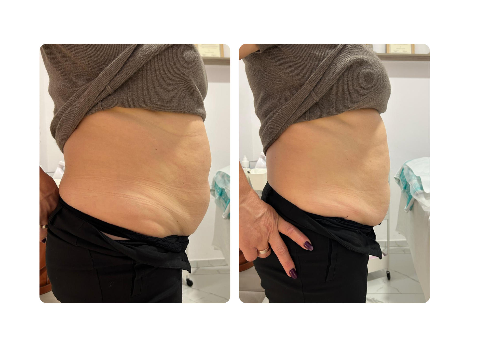

Catalog · Ediția 2026
Rezultate reale,
înainte & după.
O selecție de transformări obținute la Centrul360, cu tratamente non-invazive, ședință cu ședință — fără filtre, fără promisiuni goale. Fiecare caz din acest catalog este publicat cu acordul clientei.
Timișoara
Str. Bucegi 7
+40 750 204 243
Arad
Str. Ioan Alexandru 16–18
+40 750 263 054

Înainte
După
Centrul360.com
01 / 01
Cazul 01
HIFUabdomen total
📍 Arad
1 ședință
Tehnologie · HIFU
HIFU corporal — ultrasunete focalizate care distrug celulele de grăsime din zona tratată. Corpul le elimină apoi natural, în săptămânile următoare. Fără bisturiu, fără timp de recuperare. Rezultatul de alături este după o singură ședință.
Reducerea devine vizibilă în general la 6–8 săptămâni de la ședință.
Următorul rezultat
poate fi al tău.
Programează o consultație gratuită și stabilim împreună planul potrivit pentru tine.
Timișoara
Str. Bucegi 7
+40 750 204 243
Arad
Str. Ioan Alexandru 16–18
+40 750 263 054